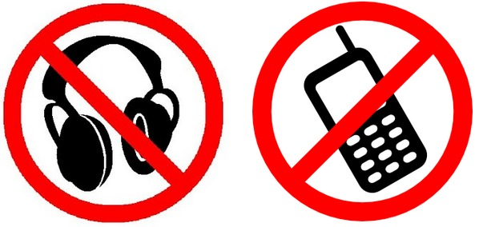
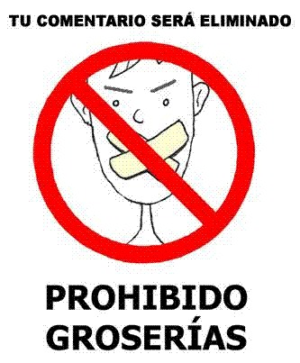
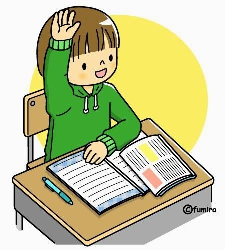
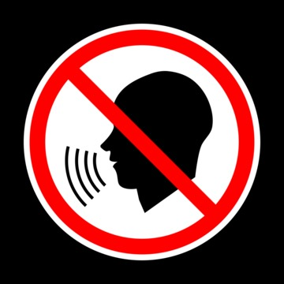
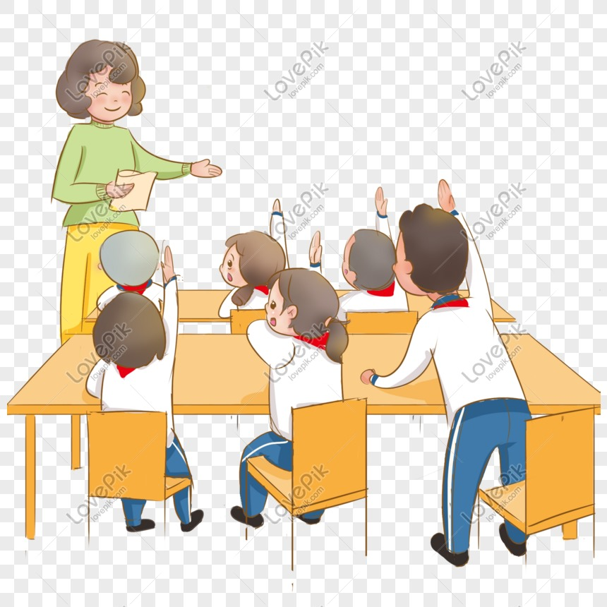
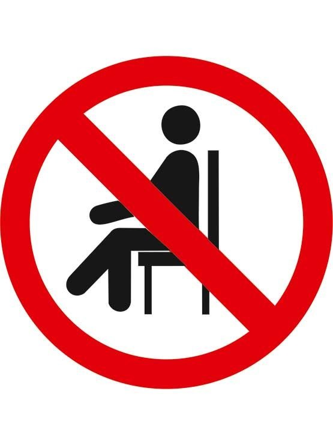
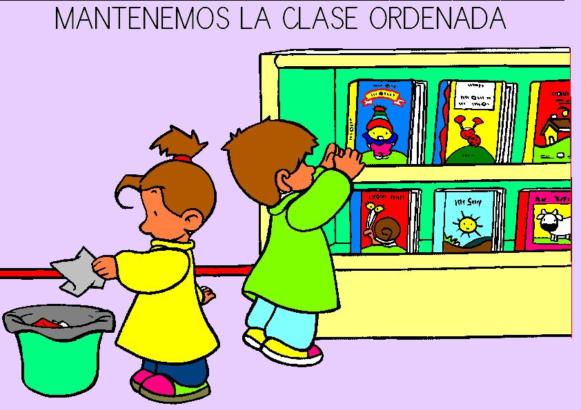

REGLAMENTOS
-
No usar dispositivos electrónicos durante la clase
Not using electronic devices during class

-
No usar lenguaje obsceno.
Not using obscene languaje

-
Levanta la mano para hablar y espera tu turno.
Raise your hand to speak and wait for your turn

-
No comer ni beber en el aula.
Not eating or drinking in the classroom

-
Mantener el silencio en el aula.
Maintain silence in the classroom

-
Respetar a otros estudiantes y profesores.
Respecting other students and teachers

-
Llegar puntualmente y mantener coherencia en el proceso educativo.
Arrive punctually and maintain consistency in the educational process

-
No te sientes en el escritorio de los maestros
Do not sit on the teachers desk

-
Mantener el orden y la limpieza en el aula.
Maintaining order and cleanliness in the classroom

-
Usar correctamente el uniforme y mantener la higiene personal.
Using the uniform correctly and maintaining personal higiene